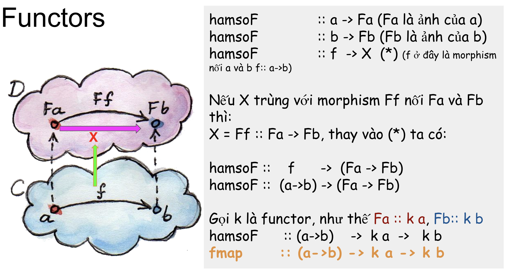

(Vi) 5.2. Sơ lược về category theory và functor
Mở bài
Về cơ bản, category theory(hay lý thuyết phạm trù) là mối quan hệ giữa các objects, được thể hiện bởi các arrows(hay morphisms), và thoả các tính chất (sẽ được nói cụ thể ở trong video):
- Identity
- Associativity
- Composition
Như vậy, liệu có tồn tại một thế giới song song với thế giới của chúng ta(C), khi mà bản thân mỗi chúng ta, sẽ có một ảnh của mình ở thế giới song song(C’), và có một hàm số (một phép tiên kỳ diệu) nào đó sao cho:
- mối quan hệ(arrows) giữa các cá nhân ở thế giới hiện tại (C)
được ánh xạ (hay biến đổi) thành
- mối quan hệ(arrows) giữa các ảnh của mỗi cá thể ở thế giới song song (C’)
(tất nhiên, mối quan hệ giữa các cá thể ở thế giới hiện tại, tương ứng với ảnh của nó ở thế giới song song, giữa nguyên thứ tự liên kết, nôm na là morphism a -> b ở thế giới C, thì sẽ biến thành f a -> f b ở thế giới C’, với f a là ảnh của a, f b là ảnh của b)
Như thế, khả năng tồn tại một thế giới song song với thế giới hiện tại là điều cũng có thể xảy ra phải không? 🤓 ^^ :)
Sơ lược về category theory

Functor

Link tới video
Link tới slides
https://docs.google.com/presentation/d/1EZJqGTqFFFQ09OFw5w0sDV2WLkvkxPXmsDUFAKXFiVQ/edit?usp=sharing
Credit
- Bác tài taxi, programmer đặc biệt nhất từng được biết LinhKyAnh, đã hỗ trợ review phần lý thuyết
Tài liệu tham khảo
- Bartosz Milewski’s ‘Category Theory for Programmers’ unofficial PDF and LaTeX source: https://github.com/hmemcpy/milewski-ctfp-pdf